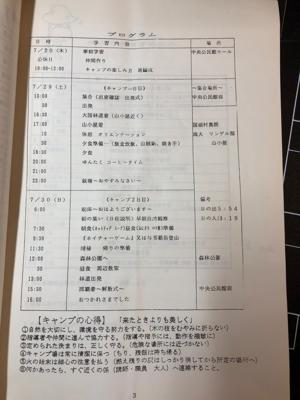
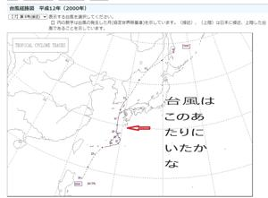
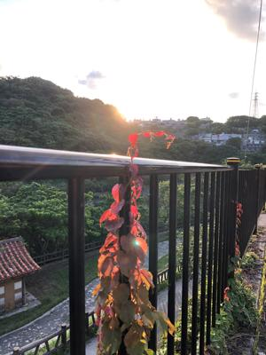

うるがいの話 ある日
最新: 断捨離する
うるがいとは 前提知識です
カニの画像をクリックすると『うるがいの話』サイトを表示します
うるがい(ｳﾙｶﾞｲ urugai)とは、『もずくがに』の名前でとても大きくなります。
たながー（ﾀﾅｶﾞｰtanagaa）とは手長えびのことで、何種類かあり大きいのは車 エビぐらいになります。
ぶながー(bunagaa)とは、赤い髪の毛、赤い身体、そして身長は１ｍ２０ｃｍ ぐらい、川の蟹を食べているの目撃された。場所は沖縄県国頭郡大宜味村のと ある村僕の隣近所に住んでいる爺さんから、聞いた話です。
2021年09月17日 (金）
断捨離する
17:10



１０年以上の日付が書かれているコドモの教科書・本の箱が、荷物となってい
た。ヨメに捨てていいかと尋ねるも、今やらなくてもいいのではと２カ月経っ
た。さすがにと、機嫌が良さそうな今日、捨てるぜ！とぼそぼそと断捨離のた
めの品定めをする。捨てていいもの、捨てられないものと。すると、ありまし
た。『那覇市中央公民館２５年周年記念事業 平成１２年度 親子自然体験講
座 わくわく体験キャンプ』７月２９日（土）～３０（日）、場所：国頭村奥
間 琉球大学ワンダーフォーゲル部所有「山小屋」。
台風のお陰で
ぐちゃぐ
ちゃになったと思うが、そのときの台風は？調べた６号だった。あれから２２
年経ったいま、コドモも子供ができたが、今は毎月オンラインで会っている。
昨日もう一人の子供が家に寄った。暇で内緒でアルバイトをやろうかと冗談で
話ていたが、今は全くの無収入、他の人達（仕事を辞めた）はどうやって生活
しているのだろうと尋ねられたか、何とかやっているのだろうと答えに窮した
心療内科の先生は、まだ仕事をしてはダメだと言われている。就活ができない
ので失業手当ももらえない。心療内科に通う人で、焦って就活をする人がいる
が、すぐに体調を崩し元も黙阿弥になってしまうと言ったとのこと。今は勉強
も何もしない方がいい！とのこと。ほー、なるほど。ただ、頓挫したと思って
いた傷病手当金の手続きはチンタラ進めているらしい、手当の期間もいろいろ
問題があり、当初考えていた期間より短くなるとのことだが、ゼロよりマシな
ので面倒くさいかもしれないけど、頑張れという。わくわく体験キャンプから
２２年たっている。台風は近づいたと思っていたが、既に沖縄本島を過ぎたあ
とだったのが分かった、記憶はあいまいだ。